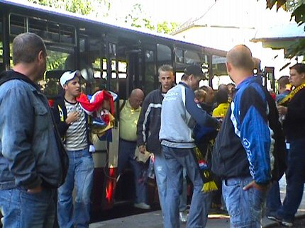
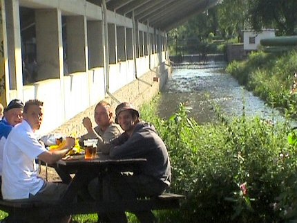
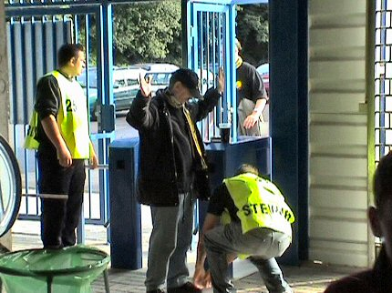
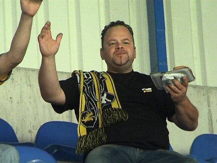
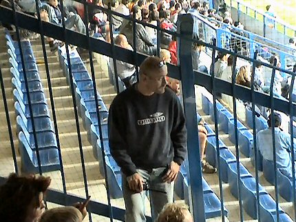
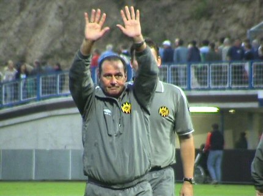
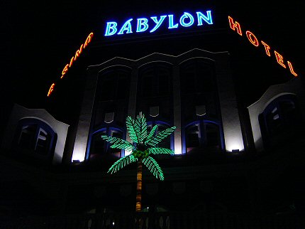
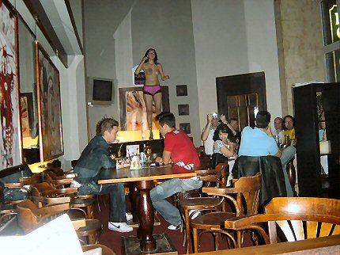
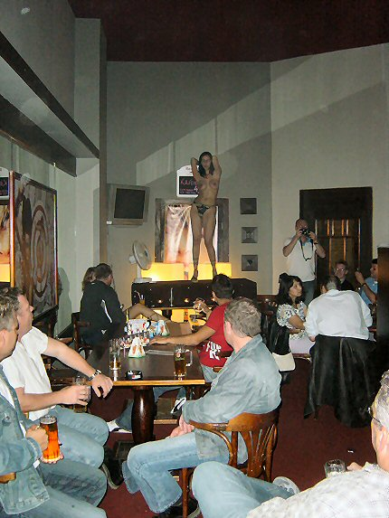

|
Slovan Liberec - Roda JC (1-1) 23 juli 2005 |
Slovan
Liberec - Roda JC (1-1) 23 juli 2005
Een klein gedeelte van de vertrekkende supporters verzamelde bij het PLS
waar L1 een korte sfeerreportage kwam maken.
De meesten zaten in hotel Impuls. Ook zat er een groep in hotel Imperial
terwijl de selectie weer in hotel Babylon vertoefde. Hotel Impuls was
compleet volgeboekt met Rodafans. Er zaten ook een paar mensen van
ons op een camping.
De FOTSers arriveerden enkele uren voor ons
in Liberec. Toen we
hen
eindelijk gevonden hadden gingen we naar de Jaguar.
Waarom kijkt d´r Pé zo blij ???
Ah, dat is duidelijk......
De Urquelles smaakten als vanouds.
Het lukte ons niet om barjuf Barbara te strikken als Rodameëdsje
maar er
zat toch nog een podiumplaats voor ons in.....
Forza Roda, Forza Barbie!!
De prijzen van de halve hanen op de diverse bezochte locaties
varieerden
van 20 tot 50 kronen. 27 kroon = 1 euro.
Dag twee. Op een terras aan de grote markt worden we lastig
gevallen door
een venter die allerhande goedkoop textiel aan ons wil verpatsen.
Aankomende Rodagirl Linda, negeert de dealer en ziet nog net dat F. Rutten
en A. Hendriks ook in dit textiel-complot zitten.
Tour-operator Henk Muijs heeft een bus ingelegd. Anderhalf uur
voor
aanvang vertrekken we naar het stadion van Slovan Liberec.
Koffieboer is voorzanger met zijn sousafoon.
Het was zo druk dat er niet voor iedereen een zitplaats was.

Aankomst bij het stadion.

Het stadion was compleet gerenoveerd. Er is een tribune bijgekomen. De
gasten zitten nu in een hoek achter de goal met irritante netten ervoor.
De Neisse stroomt nog altijd lekker langs de lange zijde en de Tsjechen
nemen net als wij, een worst met bier.
Plasplezier in de toiletten die alleen door een dronkaard of een grapjas
ontworpen kunnen zijn.

Via de lange zijde kwam je bij het gastenvak. The point of no return. Hier
werden de mannen gefouilleerd, vrouwen hoefden alleen hun tasje te laten
inzien.

Deze fan (Marcel) is een van de mensen die moest "bangen" voor de terugreis.
Het huurbusje van Cyril was namelijk afgesleept naar een garage wegens een
defecte koppeling die pas na het weekeinde gerepareerd kan worden. Maar
met een broodje worst van 45 kronen vergeet je deze ellende alweer snel.
We waren met een kleine 100 supporters maar dat aantal
verdubbelde door
de komst van Nederlandse toeristen. Velen van hun hadden zich de moeite
getroost zo geel/zwart mogelijk te verschijnen. Geweldig!!!!
Volop "policie" om op de kleintjes te letten.
Een klein gedeelte van ons vak. En de toeschouwers blijven maar
komen.
Het is gewoon ongelooflijk, maar er zitten bijna 250 mensen voor Roda
te juichen!
Een minuut stilte, geen idee waarvoor, maar volgens een omstander
was
het voor het kapotte busje van Cyril.
De Duracell-cheerleaders van Slovan Liberec.
Gelukkig was de verdediging van Roda op orde want de corners van
Liberec
waren niet te tellen.
Deze steward bewaakte het "gat" tussen de lange zijde waar we
vorig
seizoen zaten en de het nieuwe uitvak.
Lachambre had weer de voorkeur boven Filipovic. Senden speelde
deze
wedstrijd mee en voor Voigt was er ook nu weer geen plaats. Opvallendste
spelers aan Roda-zijde waren Van Dijk, Kah en Sergio. Kujovic keepte
soeverein. Invalbeuren waren er voor Sonko, Derksen en Van Dessel die er
eindelijk weer eens bij was.
Moeilijk te zien met zo'n klote net en op die afstand, maar
Sergio scoort
hier in de 37e min. 0-1.
Het lijkt wel alsof we weer in Milaan zitten.
Dit meisje plengt vreugdetranen over Rodenians shirt.

De policie wordt opgetrommeld voor een oververhitte Tsjech.
De policie draagt het gezag over aan een "stille" (linkerpijl)
die de opgefokte
Tsjech uit het vak ranselt (rechterpijl).
Politie, steward en hondjes zijn hier niet mals, maar dat weten
we nog van
vorig jaar!
Verdere escalaties zijn overigens uitgebleven. In de stad werd er door enkele
nozems een beetje geprovoceerd maar dit waren tieners in legerkleding die
zich beperkten tot een beetje rondtrekkende bewegingen en opzichtig
telefoonverkeer zonder kwalijke gevolgen. Er was eerder een atmosfeer van
wederzijds respect waarbij er uitbundig sjaaltjes werden geruild en gezamenlijk
pinten werden gepakt. Aan Roda-zijde moest een Mechelensupporter worden
gekalmeerd die zich te zeer liet opfokken door enkele Tsjechen in het
belendende vak.
Het leek wel of Liberec 90% balbezit had. Hier alweer een corner
voor
de thuispartij.
Rust. Tijd om een paar foto's te maken. Er waren veel mensen die
ik nog
nooit gezien heb.
Achter de goal aan de overkant werd er vuurwerk ontstoken. Links
van het
vuur zie je een van de legerbroek-tuupen.
Death Boys Slovan distantieert zich van alle bedreigingen die in sommige
gastenboeken zijn ge-uit.

De "stille" komt posten in ons vak.
De harde kern gooit er nog een vlaggen-parade tegenaan.
Hier is de gelijkmaker gescoord door Docek in de 80e minuut.
Weer vuurwerk en voor de Rodasupporters breken zeer bange minuten
aan
want Liberec is veel sterker en de druk op het Roda-doel wordt bijna
onhoudbaar.
Davke denkt dat we tegen Racing spelen :-)
EINDELIJK... het is afgelopen. Roda bereikt de volgende ronde.
Hey hey hey - de vreugde voelt alsof de champions league is
gewonnen.

Hupie Stevens wordt luid teruggeroepen door het publiek. De
trainer geeft
gehoor en bedankt nogmaals.
Terug naar het hotel voor een schitterende after-party.
Nagenieten in hotel Impuls.

Koempels en HBB brengen een bezoek aan het spelershotel. Hier
blijken
met name Ruud Hesp en Gregoor van Dijk toffe peren die veel aandacht
voor hun fans hebben. Kevin van Dessel en Ger Senden groeten
vriendelijk. Bodor en Bodnar hebben nauwelijks oog voor ons en DJD is
nog een beetje onwennig. Roel Brouwers is zoals altijd zeer open en
vriendelijk naar ons. De rest van de spelers was al op de kamer.
Stevens was uiterst resoluut en dirigeerde iedereen om 00.00 uur naar
de kamer. De spelers mochten niet meer de stad in vanwege de op korte
termijn te spelen loodzware wedstrijd tegen Valencia.
Dan maar weer naar Jaguar.

Altijd gezellig daar ;-)

Op het moment dat bier en tieten gaan vervelen is het hoog tijd
om op te
stappen. Alleen de HBB/KB-combinatie ging nog een bezoek brengen aan
discotheek de Hut. Misschien dat de smeu☺ge details op een andere
site opduiken....